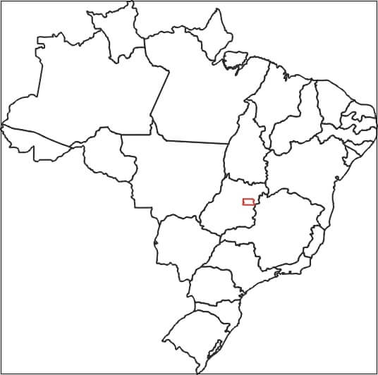
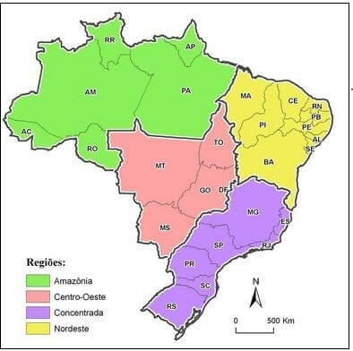
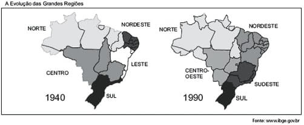
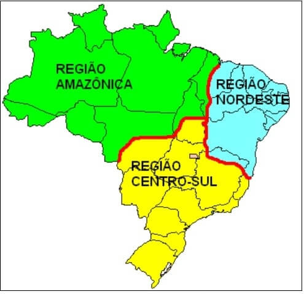
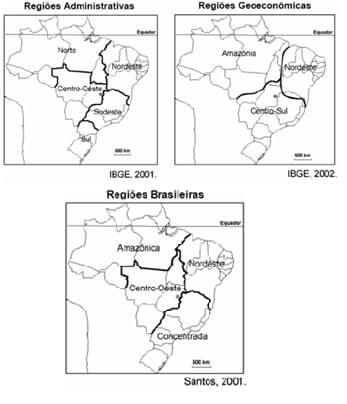

Conteúdo: : Integração nacional; Modernização seletiva; Divisão regional IBGE, técnico-científica e Geoeconômica;
Objetivo: Entender o processo de regionalização do território brasileiro, seus objetivos e suas diferenças.
Questão 01
Escreva o nome dos Estados e das capitais do Brasil no período atual.

Compare sua resposta com o comentário abaixo:
Comentário:
Colocar os comentários aqui.
Questão 02
(Unesp 2018) Na década de 1960, Pedro Pinchas Geiger elaborou uma nova regionalização do espaço brasileiro, estabelecendo três grandes regiões – Centro-Sul, Nordeste e Amazônia – segundo critérios relacionados.
a) aos limites estaduais e às características morfoclimáticas.
b) à formação socioespacial e aos limites estaduais.
c) às características morfoclimáticas e aos aspectos socioeconômicos.
d) aos aspectos socioeconômicos e às heranças do passado.
e) às características naturais e à formação socioespacial
A divisão proposta por Geiger,1960 contempla concomitantemente os aspectos físicos da base material (relevo/morfologia, clima, vegetação e hidrografia) de cada região; seu processo de evolução demográfica (povoamento e distribuição da população) e de apropriação econômica, com a implantação de infraestrutura.
Questão 03
(UNICESUMAR-SP 2015) Entre os motivos oficiais da construção de Brasília e da transferência da Capital Federal, durante o governo Juscelino Kubitschek (1956-1961), podemos citar a disposição de.
a) aumentar a proteção militar da Amazônia e das fronteiras com os países hispano-americanos.
b) estimular a indústria de base e a pecuária nas áreas próximas à nova sede do governo.
c) ampliar a oferta de mão de obra industrial e a mobilização do operariado no centro do país.
d) incentivar a ocupação do centro do Brasil e a integração política e econômica do país.
e) oferecer menor liberdade e autonomia para a atuação dos deputados e senadores.
Questão 04
(UEMS 2009) - Os geógrafos Milton Santos e Maria Laura Silveira propuseram em 2001 a seguinte divisão regional para o território brasileiro:

Fonte: SANTOS, Milton; SILVEIRA, Maria L. O Brasil: território e sociedade no início do século XXI. Rio de Janeiro: Record, 2001.
Sobre a divisão regional brasileira exposta no mapa, é correto afirmar que:
a) devido à complexa realidade territorial do Brasil na atualidade, esta divisão regional leva em consideração, principalmente, a densidade das técnicas e a velocidade da difusão de informações.
b) é errônea, pois não respeita a divisão regional estabelecida pelo IBGE em 1970 que distingue as regiões sul e sudeste.
c) a Região Nordeste caracteriza-se pela implantação mais consolidada dos dados da ciência, da técnica e da informação.
d) a Região da Amazônia caracteriza-se por alta densidade demográfica e atualmente conta com uma densa rede de transportes e comunicação.
e) não há diferenças significativas entre a Região Concentrada e a Região Nordeste no que diz respeito às redes de transporte e comunicação.
Questão 05
(Unicamp 2008) Durante o Estado Novo (1937-1945), foi criado o Conselho Nacional de Geografia, que deu origem ao Instituto Brasileiro de Geografia e Estatística, IBGE. Uma das atribuições do IBGE era produzir estatísticas básicas sobre a população brasileira, por meio de Censos. Também caberia ao Instituto produzir informações cartográficas, bem como propor e instituir uma regionalização do território brasileiro. As figuras abaixo dizem respeito a dois momentos históricos da regionalização do território brasileiro. Pergunta-se:

a) Qual o principal critério utilizado para instituir a regionalização do território brasileiro em 1940? Qual a principal finalidade do Estado brasileiro ao regionalizar o seu território?.
A regionalização do espaço brasileiro, a partir de 1940, veio da necessidade de identificar os diferentes espaços existentes no país com seus respectivos potenciais de recursos e aspectos socioeconômicos, para promover uma melhor inserção no mercado nacional emergente.
Questão 06
(UEPG 2007) Com relação ao Centro-Sul, uma das regiões geoeconômicas do Brasil, assinale o que for correto.
01) Representa a região de ocupação mais antiga do país, sendo que durante três séculos foi a região mais rica e povoada do país, tendo a cana-de-açúcar como a principal riqueza do Brasil Colônia.
02) As práticas mais modernas da agropecuária encontram-se nessa região, especialmente no interior de São Paulo, Rio Grande do Sul e Minas Gerais.
03) É a região mais povoada, urbanizada e industrializada do país, representada pelas importantes áreas industrializadas da Grande São Paulo, Grande Rio de Janeiro, Grande Belo Horizonte e Grande Porto Alegre.
04) É a maior das três regiões geoeconômicas em extensão, seguida pelo Nordeste e pela Amazônia.
05) Aí se registram as mais constantes lutas pela posse de terras envolvendo posseiros, indígenas, grileiros, empresas e até o Estado.
a) FVFVV
b) FVVFV
c) FFVFF
d) VFFVF
e) FFVVF
Questão 07
(FUVEST 1998) A divisão do território brasileiro em 3 grandes complexos regionais - Amazônia, Nordeste e Centro-Sul - tem a vantagem de caracterizar.
a) a Amazônia, com seus recursos explorados a partir de um planejamento global do Estado.
b) o Nordeste, como um polo de atração demográfica, em decorrência do turismo.
c) o Centro-Sul, como região socioeconômica de poucos contrastes internos.
d) a homogeneidade econômica no interior de cada complexo, do ponto de vista agropecuário.
e) a especialidade do processo socioeconômico, considerando a gênese histórica de cada complexo.
Questão 08
(PUC-RJ 1998) O mapa representa a divisão do território brasileiro em três grandes regiões ou complexos geoeconômicos.

Qual(is) texto(s) abaixo apresenta(m) corretamente características dominantes nesses complexos nas últimas décadas?
I – O Centro-Sul destaca-se como o centro econômico de maior dinamismo, gerando cerca de 80% da renda nacional. Nele estão presentes intensos fluxos de mercadorias, da força de trabalho e de capitais.
II – O Nordeste individualiza-se pela repulsão populacional e pela disseminação da pobreza. A estrutura fundiária altamente concentrada tem dificultado seu desenvolvimento.
III – O Complexo Amazônico destaca-se pelo processo de ocupação recente, ligado aos grandes projetos agropecuários e minerais. A construção de rodovias inter-regionais acelera a integração da nova fronteira ao centro nacional dinâmico representado pela Região Sudeste.
a) se apenas o texto III.
b) se apenas o texto II.
c) se apenas o texto I.
d) se os textos I, II e III
e) se apenas os textos I e II.
Questão 09
(FUVEST)

A partir dos mapas,
a) comente os critérios utilizados para o estabelecimento de cada uma das três regionalizações do Brasil.
As Regiões Administrativas ou Macroregiões correspondem à divisão oficial do IBGE. Ela considera os limites administrativos dos estados em sua divisão e as relativas semelhanças entre os aspectos naturais e sócio-econômicos.
As Regiões Geoeconômicas ou Grandes Complexos Regionais, não acompanha os limites entre os estados, havendo estados que possuem parte do seu território em uma região e parte em outra. Essa divisão considera a formação histórico-econômica do Brasil e a recente modernização econômica que se manifestou nos espaços urbano e rural, estabelecendo novas formas de relações no território brasileiro.
O mapa Regiões Brasileiras releva o contexto da Terceira Revolução Industrial ou Técnico-Cientifica. Considera entre outros aspectos: a quantidade de recursos tecnológicos avançados, o volume de atividades econômicas modernas nas áreas financeira, comercial, industrial e de serviços. A região que detém a maior parte destes recursos instalados, é conhecida como região concentrada e corresponde às regiões sul e sudeste da divisão do IBGE.
Questão 10
"O geógrafo Pedro Pinchas Geiger propôs, em 1967, a divisão regional do Brasil em três regiões geoeconômicas ou complexos regionais (...). Essa divisão regional tem por base as características geoeconômicas e a formação histórico-econômica do Brasil. (...)"
(ADAS, M. "Geografia: o Brasil e suas regiões geoeconômicas". São Paulo: Moderna, 1996. p. 52 e 67.)
Aos complexos regionais da Amazônia, do Nordeste e do Centro-Sul, propostos por Geiger, podem-se atribuir, respectivamente, as seguintes caracterizações:
a) Povoado no período colonial - industrializado - de baixa densidade demográfica.
b) De agricultura tecnificada - de atração de mão de obra - de predomínio de população rural.
c) De pequenas propriedades rurais - de industrialização tradicional - de economia extrativa.
d) de expansão da fronteira agrícola - colonizado através da economia açucareira – o mais industrializado e urbanizado.
e) De integração dos povos da floresta - de economia agropecuária moderna - de expulsão de mão de obra.